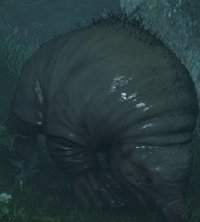
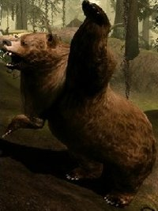

Atoleiro Inculto
Ao sul do sertão, a terra está molhada e miserável, sujeita a tempestades aparentemente intermináveis. Os aldeões tentaram esculpir uma existência escassa no Moinho do Atoleiro Inculto, mas suas vidas estão sob constante ameaça por uma onda de mortos-vivos que se levantam das águas turvas que inundam grande parte da região.
Plantas
| Raiz Élfica | Encontrada em menor escala, comparando à região Terras Distantes(Onde é fácil conseguir a planta). |

|
| Lótus de Sangue | Encontrada sempre próxima a água. |

|
| Lótus do Amanhecer (RARO) | Primeiro encontre o 1° farol. Segundo abra o mapa e terceiro, ande para o oeste até o final do mapa rente a linha do 1° farol. |

|
Minérios
| Sulfato de Cobre | Encontrado perto do "Acampamento da Ponta do Pescador" nas rochas em volta e em todo mapa |

|
| Pedra de Verão | Encontrado perto do "Acampamento da Ponta do Pescador" nas rochas em volta e em todo mapa. |

|
Outros
| Fuinha do Pântano | Em todo o mapa lugares aleatórios, geralmente perto de cabanas para o meio do mapa. |  |
| Urso | Particularmente eu só achei, um urso, perto do moinho que é ponto de referência. |  |
Vendedores
Essa é uma região hostíl, por essa razão não se tem vendedores aqui.
 Clique aqui para subir.
Clique aqui para subir.